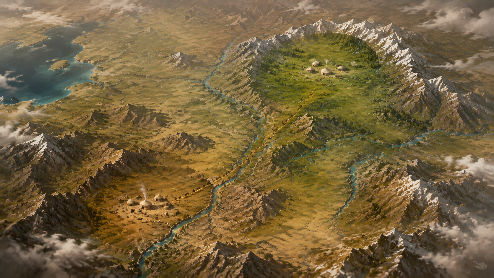
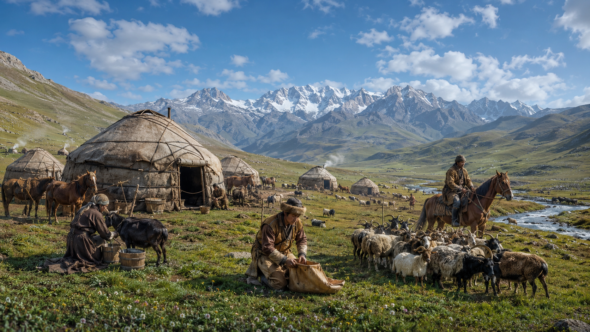
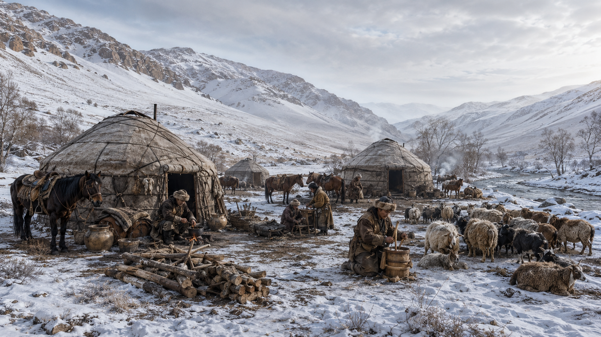
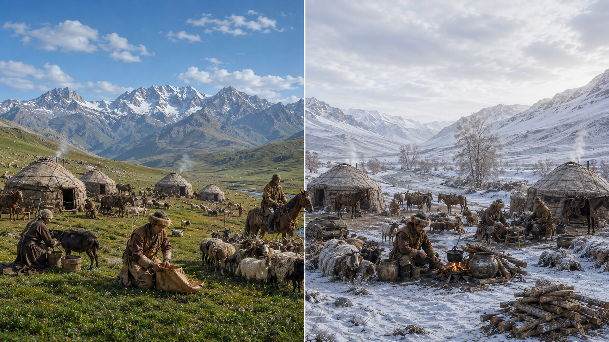
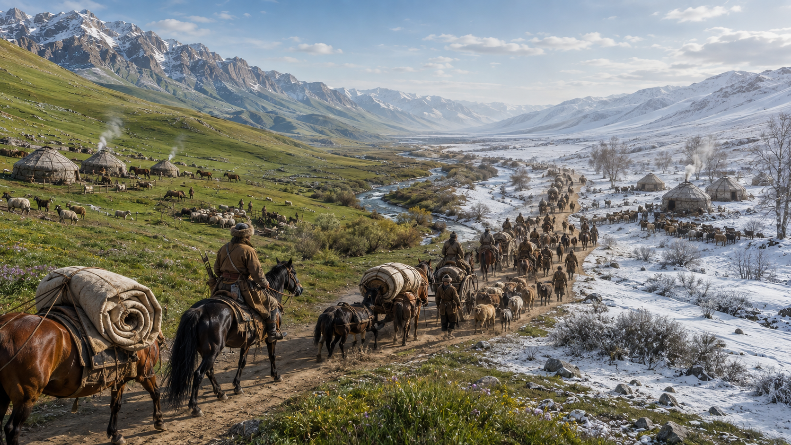

Yaylak mı, Kışlak mı?
Konargöçer Yaşam ve Mevsimsel Göç


| Özellik | ☀️ Yaylak | ❄️ Kışlak |
|---|---|---|
| Mevsim | Yaz | Kış |
| Coğrafi Alan | Yüksek ve serin alanlar | Alçak ve korunaklı vadiler |
| Temel Amaç | Yaz mevsimini geçirmek, hayvanları otlatmak | Kış mevsimini kolay geçirmek, soğuktan korunmak |
| Önemli Unsur | Geniş ve verimli otlaklar | Rüzgâra kapalı korunaklı alan |
| Yaşam Biçimi | Konargöçer hayvancılık | Konargöçer hayvancılık |

Durum Değerlendirmesi:

✨
Öğrenme Özeti
✨
Göç Yolculuğunu Başarıyla Tamamladınız!
Yaylak ve kışlak arasında yapılan mevsimsel hareketlilik, konargöçer yaşamın ve hayvancılık kültürünün temel özelliklerinden biridir.
Yaz → Yaylak
Yüksek ve serin alanlardaki zengin otlaklarda hayvanlar beslenir.
Kış → Kışlak
Alçak ve korunaklı vadilerde sert kış soğuklarından ve rüzgârdan korunulur.
Hayvancılık
Sürülerin beslenmesi ve korunması, konargöçer ekonominin ve yaşamın temelidir.
Konargöçer Düzen
Doğanın mevsimsel döngüsüne ve iklim şartlarına uyumlu dinamik bir yaşam tarzıdır.